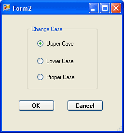
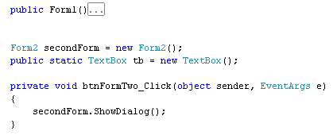
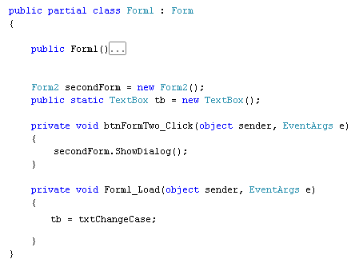
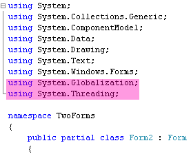
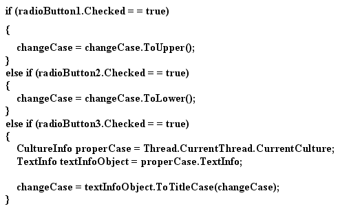
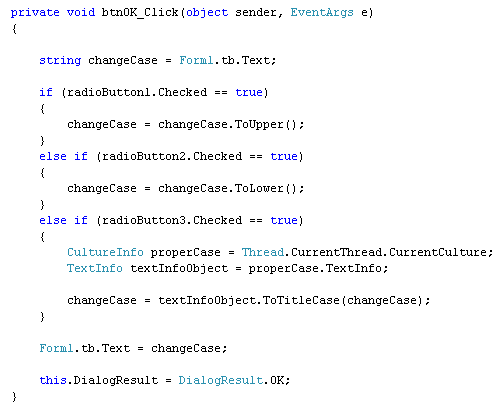

Getting at the values on other Forms
<< Part of an ongoing lesson - first part is here >>
Turn your Form2 into a Change Case dialogue box, just like ours below:

When the OK button is clicked, we want the text in the text box on Form1 to change case, depending on which of the three options was chosen.
The problem we face is that the text box is private to Form1, and can't be seen from outside it. If you tried to refer to the text box from Form2, you'd just get errors.
One solution is to set up a public static variable, of type TextBox. You then assign textBox1 to this new variable.
So add the following to Form1:
public static TextBox tb = new TextBox();
This creates a new TextBox object called tb. Add the line just under your Form variable, and your coding window will look like this:

Notice that we've deleted the message box code, and went back to the original. That's because we don't need the message box anymore. Delete yours as well.
Now that we have a TextBox object, we can assign our text box on form one to it. In the Form Load event of Form1, add the following line:
tb = txtChangeCase;
(The easiest way to bring up the code stub for the Form Load event is to double click a blank area of the form in design view.)
Here's what all the Form1 code looks like now:

When the main form (Form1) loads, the text box will now be available to Form2.
So double click your OK button on Form2 to bring up its code stub. Enter the following:
string changeCase = Form1.tb.Text;
We're setting up a string variable called changeCase. The contents of this new string variable will be the Text from the text box called tb on Form1.
To change the case of the text, we can use string methods for two of them: Uppercase and Lowercase. Like this:
changeCase = changeCase.ToUpper();
changeCase = changeCase.ToLower();
Unfortunately, C# .NET does not have a direct string method to change text to Proper Case (or Title case as it's also know). Proper Case is capitalising the first letter of each word. For example, "This Is Proper Case".
In order to get Proper Case, you have to reference two System namespaces. One called Globalization and one called Threading. Add the following to the very top of the coding window:
using System.Globalization;
using System.Threading;
The code window will then look something like this:

Now that we have these two references, the next thing to do is to set up something called a CultureInfo object:
CultureInfo properCase = Thread.CurrentThread.CurrentCulture;
The CurrentCulture tells you information about the various language options of your particular country. Our CultureInfo object is called properCase.
That's not the end of it, though! You also need a TextInfo object:
TextInfo textInfoObject = properCase.TextInfo;
It's this TextInfo object that has the methods we need. We're setting up a TextInfo object called textInfoObject. We're handing it the TextInfo property of our properCase CultureInfo object.
Finally, we can change the case:
changeCase = textInfoObject.ToTitleCase( changeCase );
The TextInfo object has a method called ToTitleCase. In between the round brackets of the method, you type what it is you want to convert.
Hopefully, in future versions of C#, they'll add an easier way to convert to Proper Case!
To get which of the options on our Form2 was chosen, we can add a series of if … else statements:

So we're just checking to see which radio button was selected. We're then doing the case conversion.
To put the changed text into the text box on Form1, add the following line:
Form1.tb.Text = changeCase;
Add the line just before your DialogResult line. The full code for the button should be this

Run your programme and test it out. Click your button to bring up Form2. Select the Upper Case option and then click your OK button. You should find that the text in txtChangeCase on your main form will now be in uppercase.
The next section of the C# course deals with Dates and Times.